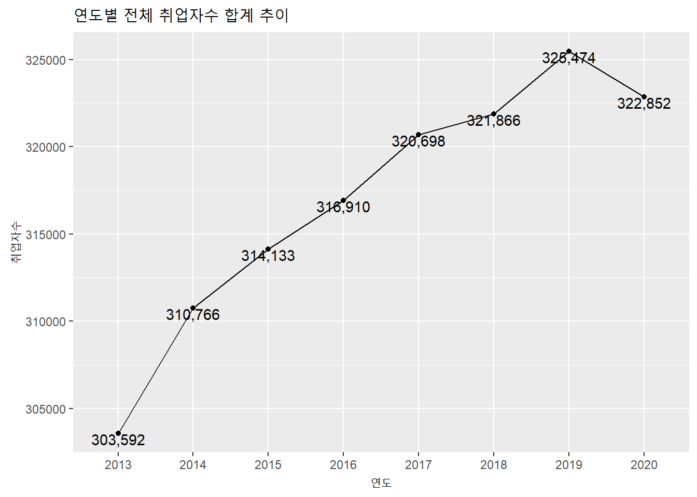
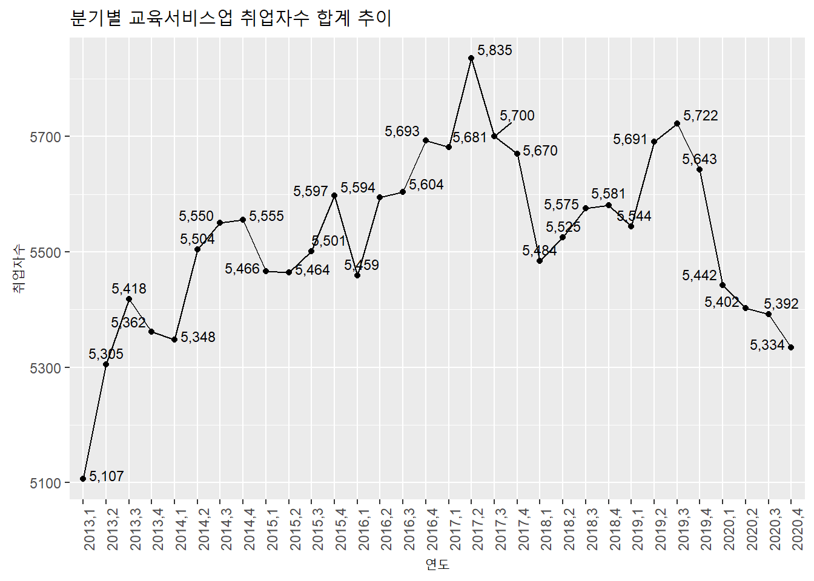
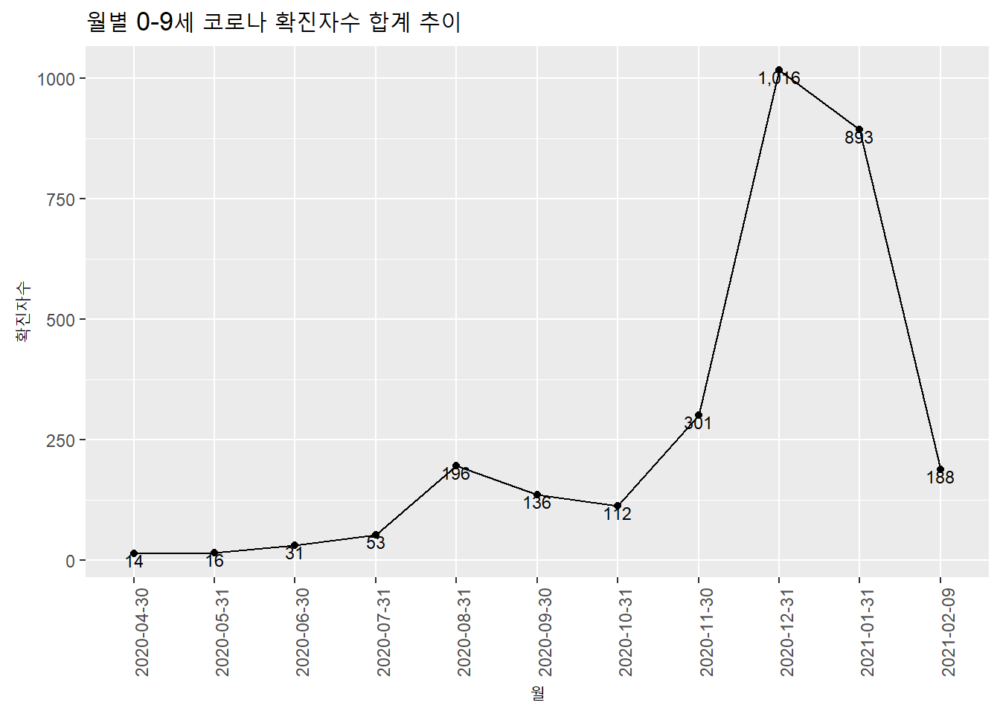
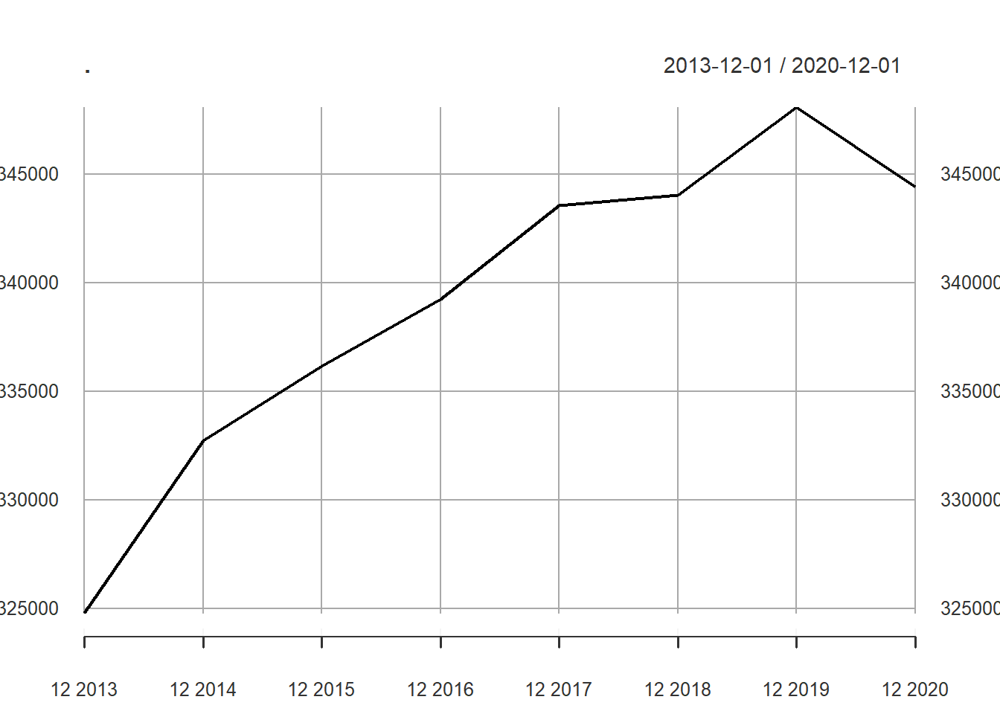
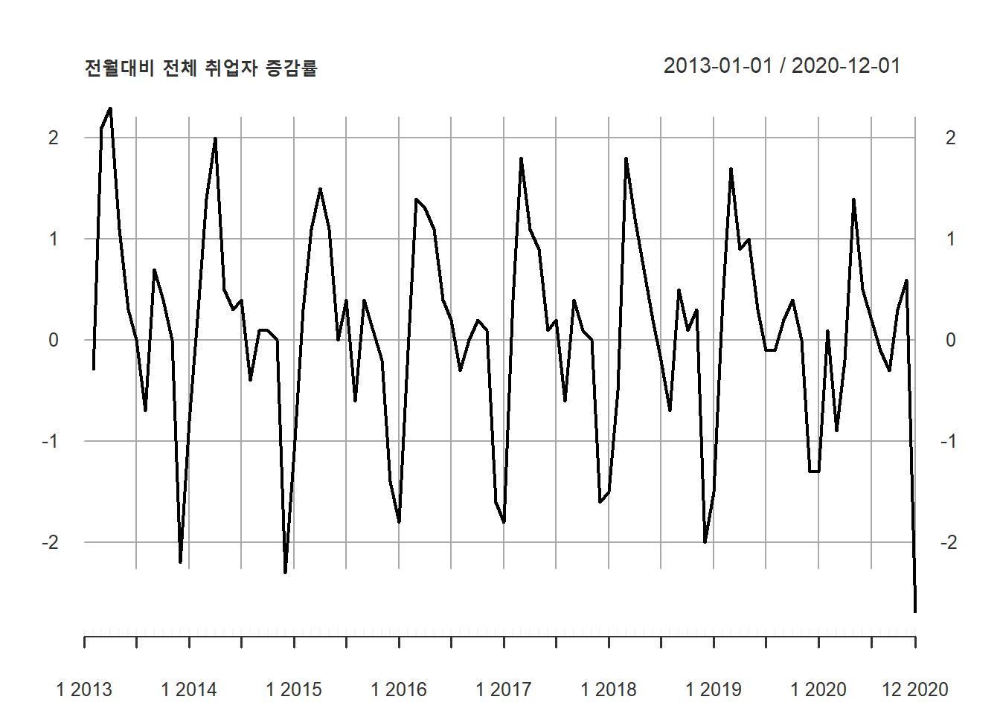

4.2 시계열 데이터 응용 사례
본 절에서는 앞에서 설명한 시계열 데이터 핸들링 방법을 기초로 실제 리포팅 과정에서 주로 많이 사용되는 응용 사례에 대해 설명한다. 시계열 데이터가 저장되어 있는 객체의 형태별로 사용가능한 함수와 plotting 예제를 보인다.
4.2.1 월별, 분기별, 연별 합계
- 데이터프레임 : month(), quarter(), year() 함수
데이터 프레임 객체는 dplyr의 group_by()함수와 파이프라인(%>%)을 사용하여 데이터를 그룹핑 한 후 summarise() 함수를 사용하여 합계를 구할 수 있다.
employees %>%
mutate(year = year(time)) %>% ### 시간에서 연도를 추출하여 컬럼 생성
group_by(year) %>% ### 연도컬럼으로 group
summarise(total.year = sum(total),
employees.edu.year = sum(employees.edu)) ### 연도별 합계 산출## # A tibble: 8 x 3
## year total.year employees.edu.year
## <dbl> <int> <int>
## 1 2013 303592 21192
## 2 2014 310766 21957
## 3 2015 314133 22028
## 4 2016 316910 22350
## 5 2017 320698 22886
## 6 2018 321866 22165
## 7 2019 325474 22600
## 8 2020 322852 21570employees %>%
mutate(year = year(time)) %>%
group_by(year) %>%
summarise(total.year = sum(total),
employees.edu.year = sum(employees.edu)) %>%
ggplot(aes(as.factor(year), total.year)) + ### x축에 연도를 as.factor로 변환하지 않으면 연도가 모두 표기되지 않음(정수와 factor의 차이임)
geom_line(aes(group = 1)) +
geom_point() +
geom_text(aes(label = scales::comma(total.year)), vjust = 1) +
### 데이터 포인트마다 취업자수를 표기하는데 scales::comma() 함수로 1000단위 콤마를 찍고 포인트와 겹치기 때문에 vsjut로 위치조정
labs(title = '연도별 전체 취업자수 합계 추이', x = '연도', y = '취업자수')
### plot, x, y 축제목 설정
employees %>%
mutate(year = year(time), qrt = quarter(time)) %>%
group_by(year, qrt) %>%
summarise(total.year = sum(total),
employees.edu.year = sum(employees.edu))## # A tibble: 32 x 4
## # Groups: year [8]
## year qrt total.year employees.edu.year
## <dbl> <int> <int> <int>
## 1 2013 1 73238 5107
## 2 2013 2 76618 5305
## 3 2013 3 76895 5418
## 4 2013 4 76841 5362
## 5 2014 1 75629 5348
## 6 2014 2 78275 5504
## 7 2014 3 78676 5550
## 8 2014 4 78186 5555
## 9 2015 1 76629 5466
## 10 2015 2 79024 5464
## # ... with 22 more rowsemployees %>%
mutate(year = year(time), qrt = quarter(time)) %>%
group_by(year, qrt) %>%
summarise(total.year = sum(total),
employees.edu.year = sum(employees.edu)) %>%
ggplot(aes(x = as.factor(paste0(year, ',', qrt)), y = employees.edu.year)) +
geom_line(aes(group = 1)) +
geom_point() +
ggrepel::geom_text_repel(aes(label = scales::number(employees.edu.year, big.mark = ',', accuracy = 1)), vjust = 1, size = 3) + ### ggrepel::geom_text_repel() 함수로 숫자들이 겹치지 않게 plotting
labs(title = '분기별 교육서비스업 취업자수 합계 추이', x = '연도', y = '취업자수') +
theme(axis.text.x=element_text(angle=90,hjust=1))
wide.covid19.by.age %>%
mutate(year = year(date), month = month(date)) %>%
group_by(year, month) %>%
summarise(`0-9세.month` = sum(`0-9세`))## # A tibble: 11 x 3
## # Groups: year [2]
## year month `0-9세.month`
## <dbl> <dbl> <dbl>
## 1 2020 4 14
## 2 2020 5 16
## 3 2020 6 31
## 4 2020 7 53
## 5 2020 8 196
## 6 2020 9 136
## 7 2020 10 112
## 8 2020 11 301
## 9 2020 12 1016
## 10 2021 1 893
## 11 2021 2 188- 데이터프레임, tsibble : collapse_by() 함수
데이터프레임이나 tsibble 객체는 collapse_by() 함수를 사용할 수 있다. 앞서 설명한 바와 같이 collpase_by 함수를 사용하기 위해서는 tbl_time 객체로 변환이 필요하다.
as_tbl_time(employees, index = time) %>%
collapse_by('quarterly') %>%
group_by(time) %>%
summarise(total.quater = sum(total))## # A time tibble: 32 x 2
## # Index: time
## time total.quater
## <date> <int>
## 1 2013-03-01 73238
## 2 2013-06-01 76618
## 3 2013-09-01 76895
## 4 2013-12-01 76841
## 5 2014-03-01 75629
## 6 2014-06-01 78275
## 7 2014-09-01 78676
## 8 2014-12-01 78186
## 9 2015-03-01 76629
## 10 2015-06-01 79024
## # ... with 22 more rowsas_tbl_time(employees, index = time) %>%
collapse_by('quarterly') %>%
group_by(time) %>%
summarise(total.quater = sum(total)) %>%
ggplot(aes(time, total.quater)) +
geom_line() +
geom_point() +
ggrepel::geom_text_repel(aes(label = scales::comma(total.quater)), vjust = 1, size = 3) + ### ggrepel::geom_text_repel() 함수로 숫자들이 겹치지 않게 plotting
labs(title = '분기별 전체 취업자수 합계 추이', x = '연도', y = '취업자수')
as_tbl_time(wide.covid19.by.age.tsibble, index = date) %>%
collapse_by('monthly') %>%
group_by(date) %>%
summarise(total.1대 = sum(`0-9세`)) %>%
ggplot(aes(as.factor(date), total.1대)) +
geom_line(aes(group = 1)) +
geom_point() +
geom_text(aes(label = scales::comma(total.1대, accuracy = 1)), vjust = 1, size = 3) + ### ggrepel::geom_text_repel() 함수로 숫자들이 겹치지 않게 plotting
labs(title = '월별 0-9세 코로나 확진자수 합계 추이', x = '월', y = '확진자수') +
theme(axis.text.x=element_text(angle=90,hjust=1))
- tsibble : index_by() 함수
tsibble 객체는 데이터프레임 객체와 동일하게 핸들링 할 수 있다. 하지만 tsibble 객체에서만 동작하는 함수인 index_by() 함수를 사용하면 쉽게 구할 수 있다. index_by 함수는 tsibble 객체 생성시 지정한 index 컬럼에서 grouping 하기 위한 새로운 컬럼을 생성하는데 이 컬럼에 grouping 주기를 함수로 명기한다. 여기서 주의해야할 사항은 grouping 함수 앞에 ~를 붙여야 한다는 것과 grouping 함수의 매개변수로 ‘.’을 사용해야 한다는 점이다.’’의 의미는 index 컬럼을 사용한다는 의미이다.
grouping 주기는 다음과 같다.
| 함수명 | 주기 |
|---|---|
| lubridate::year | 연도 주기 |
| yearquarter | 분기 주기 |
| yearmonth | 월 주기 |
| yearweek | 주 주기 |
| as.Date | 일 주기 |
| celling_date, floor_date, round_date | 상세 주기 |
employees.tsibble%>%
index_by(yearqtr = ~ yearquarter(.)) %>%
summarise(sum.qtrly = sum(total)) %>%
head(10)## # A tsibble: 10 x 2 [1Q]
## yearqtr sum.qtrly
## <qtr> <int>
## 1 2013 Q1 73238
## 2 2013 Q2 76618
## 3 2013 Q3 76895
## 4 2013 Q4 76841
## 5 2014 Q1 75629
## 6 2014 Q2 78275
## 7 2014 Q3 78676
## 8 2014 Q4 78186
## 9 2015 Q1 76629
## 10 2015 Q2 79024wide.covid19.by.age.tsibble[, c(1,3)]%>%
index_by(yearweek = ~ yearweek(.)) %>%
summarise(sum.weekly = sum(`0-9세`)) %>%
head(10)## # A tsibble: 10 x 2 [1W]
## yearweek sum.weekly
## <week> <dbl>
## 1 2020 W15 4
## 2 2020 W16 8
## 3 2020 W17 3
## 4 2020 W18 -1
## 5 2020 W19 1
## 6 2020 W20 6
## 7 2020 W21 1
## 8 2020 W22 8
## 9 2020 W23 7
## 10 2020 W24 3index_by를 사용할 때 장점은 grouping 기간을 자유자재로 설정할 수 있다는 점이다. 월, 분기, 년과 같이 달력상의 주기 외에 ‘매 4일마다,’ ’매 2달마다’와 같이 주기를 설정할 수 있다.
wide.covid19.by.age.tsibble[, c(1,3)]%>%
index_by(twoweek = ~ lubridate::floor_date(., "2 month")) %>%
summarise(sum.2week = sum(`0-9세`)) %>%
head(10)## # A tsibble: 6 x 2 [1D]
## twoweek sum.2week
## <date> <dbl>
## 1 2020-03-01 14
## 2 2020-05-01 47
## 3 2020-07-01 249
## 4 2020-09-01 248
## 5 2020-11-01 1317
## 6 2021-01-01 1081wide.covid19.by.age.tsibble[, c(1,3)]%>%
index_by(fourday = ~ lubridate::floor_date(., "4 day")) %>%
summarise(sum.4days = sum(`0-9세`)) %>%
head(10)## # A tsibble: 10 x 2 [1D]
## fourday sum.4days
## <date> <dbl>
## 1 2020-04-09 4
## 2 2020-04-13 5
## 3 2020-04-17 3
## 4 2020-04-21 0
## 5 2020-04-25 2
## 6 2020-04-29 0
## 7 2020-05-01 0
## 8 2020-05-05 1
## 9 2020-05-09 1
## 10 2020-05-13 5- xts : apply 계열 함수
xts 객체의 월별, 분기별, 연별 값을 구하기 위해서 제공하는 함수는 ’apply.’으로 시작하는 함수로 함수에 xts 객체와 적용하고자 하는 함수(sum, mean 등)을 전달하면 값을 산출할 수 있다. apply. 계열 함수는 다음의 5가지가 있다. 산출된 결과는 plot.xts 함수로 간단히 plotting 할 수 있다.
| 함수명 | 설명 |
|---|---|
| apply.daily(xts객체, 함수명) | 일별로 함수를 적용한 결과값 반환 |
| apply.weekly(xts객체, 함수명) | 주별로 함수를 적용한 결과값 반환 |
| apply.monthly(xts객체, 함수명) | 월별로 함수를 적용한 결과값 반환 |
| apply.quarterly(xts객체, 함수명) | 분기별로 함수를 적용한 결과값 반환 |
| apply.yearly(xts객체, 함수명) | 년별로 함수를 적용한 결과값 반환 |
library(xts)
apply.quarterly(employees.xts, sum) %>% head(10)## [,1]
## 2013-03-01 78345
## 2013-06-01 81923
## 2013-09-01 82313
## 2013-12-01 82203
## 2014-03-01 80977
## 2014-06-01 83779
## 2014-09-01 84226
## 2014-12-01 83741
## 2015-03-01 82095
## 2015-06-01 84488apply.yearly(employees.xts, sum) %>% plot.xts()
apply.monthly(wide.covid19.by.age.xts[,1], sum) %>% plot.xts(main = '월별 0-9세 코로나 확진자수')
apply.quarterly(wide.covid19.by.age.xts[,1], sum) %>% plot.xts(main = '분기별 0-9세 코로나 확진자수')
- ts 객체
ts 객체는 다음장부터 다뤄질 시계열 분석 패키지인 forecast 패키지에서 중요하게 사용되는 객체이다. 하지만 앞선 data.frame 이나 xts 처럼 핸들링이 용이하지 않다. 따라서 데이터 핸들링을 위해서는 data.frame 이나 xts 객체로 변환하여 사용하는 것이 정신 건강에 좋다.
4.2.2 월별, 분기별, 연별 증감량
- 데이터프레임 : lag() 함수
월별, 분기별, 연별 증감량을 산출하기 위해서는 바로 직전 데이터와의 차감 데이터를 계산해야 한다. 시계열 분석에서는 바로 이전 데이터와의 차감데이터가 중요하게 활용되는데 자세한 내용은 다음장에서 다뤄진다. lag() 함수를 통해 데이터를 하나씩 Shift 시켜주고 mutate를 통해 증감과 증감률 컬럼을 넣어준다.
cbind(students %>% filter(지역규모 == '계') %>% select(연도, 학생수계), ### 1.연도와 학생수 컬럼을 선택
students %>% filter(지역규모 == '계') %>% lag(1) %>% select(학생수계) %>% rename(전년 = 학생수계)) %>% ### 2. lag(1) 함수를 사용하여 시차1 데이터 생성(하나씩 아래로 shift) 하고 컬럼명을 lag로 변경
mutate(증감 = 학생수계 - 전년, 증감율 = round((학생수계/전년)-1, 3) * 100) %>% head(10) ### 3. 시차1 데이터와 원 데이터의 차이를 증감 컬럼으로, 원데이터를 시차1 데이터로 나눈 수치를 1에서 빼준 결과(비중을 증감으로 변환)에 100을 곱한다(백분률로 변환)## 연도 학생수계 전년 증감 증감율
## 1 1999 8658358 NA NA NA
## 2 2000 8535867 8658358 -122491 -1.4
## 3 2001 8414423 8535867 -121444 -1.4
## 4 2002 8361933 8414423 -52490 -0.6
## 5 2003 8379775 8361933 17842 0.2
## 6 2004 8371630 8379775 -8145 -0.1
## 7 2005 8371421 8371630 -209 0.0
## 8 2006 8354891 8371421 -16530 -0.2
## 9 2007 8309932 8354891 -44959 -0.5
## 10 2008 8187782 8309932 -122150 -1.5cbind(students %>% filter(지역규모 == '계') %>% select(연도, 학생수계),
students %>% filter(지역규모 == '계') %>% lag(1) %>% select(학생수계) %>% rename(전년 = 학생수계)) %>%
mutate(증감 = 학생수계 - 전년, 증감율 = round((학생수계/전년)-1, 3) * 100) %>%
ggplot(aes(as.factor(연도), 증감)) +
geom_line(aes(group = 1)) +
geom_point() +
ggrepel::geom_text_repel(aes(label = scales::comma(증감)), vjust = 1, size = 3) + ### ggrepel::geom_text_repel() 함수로 숫자들이 겹치지 않게 plotting
labs(title = '전년대비 전체 학생수 증감 추이', x = '연도', y = '학생수 증감량') +
theme(axis.text.x=element_text(angle=90,hjust=1))cbind(employees %>% select(time, total),
employees %>% select(total) %>% lag(1) %>% rename(전월 = total)) %>%
mutate(증감 = total - 전월, 증감율 = round((total/전월)-1, 3) * 100) %>%
ggplot(aes(time, 증감율)) +
geom_line(aes(group = 1)) +
geom_point() +
labs(title = '전월대비 전체 취업자수 증감율 추이', x = '시간', y = '취업자수 증감율') +
scale_x_date(date_breaks = '6 month') +
theme(axis.text.x=element_text(angle=90,hjust=1))- tsibble : diffrence() 함수
앞선 데이터 프레임에서는 lag() 함수를 사용하여 원 데이터의 time shift를 한 데이터 컬럼을 생성하고 두 컬럼의 차이를 구하였다. tsibble 객체는 이 과정을 바로 지원하는 difference() 함수를 제공한다. 따라서 데이터프레임보다는 몇단계 과정을 줄일수 있다.
students.tsibble%>% filter(지역규모 == '계') %>% select(1, 3) -> students.tsibble.계
students.tsibble.계 %>%
mutate(증감 = difference(students.tsibble.계$학생수계, lag = 1)) %>%
mutate(증감율 = round((증감/학생수계), 3) * 100) %>% head(10)## # A tsibble: 10 x 4 [1Y]
## 연도 학생수계 증감 증감율
## <int> <dbl> <dbl> <dbl>
## 1 1999 8658358 NA NA
## 2 2000 8535867 -122491 -1.4
## 3 2001 8414423 -121444 -1.4
## 4 2002 8361933 -52490 -0.6
## 5 2003 8379775 17842 0.2
## 6 2004 8371630 -8145 -0.1
## 7 2005 8371421 -209 0
## 8 2006 8354891 -16530 -0.2
## 9 2007 8309932 -44959 -0.5
## 10 2008 8187782 -122150 -1.5employees%>%
mutate(증감 = difference(employees.tsibble$total, lag = 1)) %>%
mutate(증감율 = round((증감/total), 3) * 100) %>% select(1, 2, 4, 5) %>% head(10)## time total 증감 증감율
## 1 2013-01-01 24287 NA NA
## 2 2013-02-01 24215 -72 -0.3
## 3 2013-03-01 24736 521 2.1
## 4 2013-04-01 25322 586 2.3
## 5 2013-05-01 25610 288 1.1
## 6 2013-06-01 25686 76 0.3
## 7 2013-07-01 25681 -5 0.0
## 8 2013-08-01 25513 -168 -0.7
## 9 2013-09-01 25701 188 0.7
## 10 2013-10-01 25798 97 0.4- xts : diff() 함수
xts 객체도 tsibble 객체와 같이 차분 함수인 diff() 함수를 제공한다. 이후 과정은 tsibble과 동일한 과정을 거친다.
students.total.xts$증감 <- diff(students.total.xts[,2])
students.total.xts$증감율 <- round((students.total.xts$증감/students.total.xts$학생수계), 3) * 100
students.total.xts[, c('학생수계', '증감', '증감율')] %>% head(10)## 학생수계 증감 증감율
## 1999-01-01 8658358 NA NA
## 2000-01-01 8535867 -122491 -1.4
## 2001-01-01 8414423 -121444 -1.4
## 2002-01-01 8361933 -52490 -0.6
## 2003-01-01 8379775 17842 0.2
## 2004-01-01 8371630 -8145 -0.1
## 2005-01-01 8371421 -209 0.0
## 2006-01-01 8354891 -16530 -0.2
## 2007-01-01 8309932 -44959 -0.5
## 2008-01-01 8187782 -122150 -1.5plot.xts(students.total.xts[, '증감율'], main = '전년대비 학생수 증감률')
employees.xts$증감 <- diff(employees.xts$total)
employees.xts$증감율 <- round((employees.xts$증감/employees.xts$total), 3) * 100
employees.xts[, c('total', '증감', '증감율')] %>% head(10)## total 증감 증감율
## 2013-01-01 24287 NA NA
## 2013-02-01 24215 -72 -0.3
## 2013-03-01 24736 521 2.1
## 2013-04-01 25322 586 2.3
## 2013-05-01 25610 288 1.1
## 2013-06-01 25686 76 0.3
## 2013-07-01 25681 -5 0.0
## 2013-08-01 25513 -168 -0.7
## 2013-09-01 25701 188 0.7
## 2013-10-01 25798 97 0.4plot.xts(employees.xts[, c('증감율')], main = '전월대비 전체 취업자 증감률')
4.2.3 월 비중 백분율, 연 비중 백분율
전체 연간 매출의 월별 비중, 전체 월간 합계 중 일별, 주간별 비중과 같은 수치를 산출해야할 때가 있다. 전체 연간 매출의 월별 비중을 모두 합하면 100%가 되어야 한다. 이를 위해서는 각각의 row에 비중을 구하기 위한 총 합계치가 계산되어야 한다.
예를 들어 매월 매출액이 기록된 시계열 데이터에서 년중 비중을 구하기 위해서는 매월 매출액의 옆 컬럼에 해당 년의 전체 매출액 합계가 있어야 비중을 구할 수 있다.
- data.frame : group_by(), mutate() 함수
데이터 프레임에서 총합계를 구하기 위해서는 먼저 구하고자 하는 총 합계의 주기로 grouping 하여 전체 합계를 구해야하는데 이때 주의해야할 점이 summarise() 함수를 통해 합계를 구하지 않고 mutate() 함수를 통해 합계를 구해야 한다. summarise 함수를 통해 합계를 구하면 전체 데이터 구조가 grouping 된 구조로 바뀌게 되지만 mutate() 함수를 통해 합계를 구하면 grouping 된 주기별로 합계값을 구한 컬럼이 추가되게 되어 비중을 구하기 쉽다.
employees %>%
group_by(year(time)) %>%
mutate(sum.by.year = sum(total)) %>%
ungroup() %>%
mutate(rate.by.year = round(total/sum.by.year, 3) * 100) %>%
head(15)## # A tibble: 15 x 6
## time total employees.edu `year(time)` sum.by.year rate.by.year
## <date> <int> <int> <dbl> <int> <dbl>
## 1 2013-01-01 24287 1710 2013 303592 8
## 2 2013-02-01 24215 1681 2013 303592 8
## 3 2013-03-01 24736 1716 2013 303592 8.1
## 4 2013-04-01 25322 1745 2013 303592 8.3
## 5 2013-05-01 25610 1774 2013 303592 8.4
## 6 2013-06-01 25686 1786 2013 303592 8.5
## 7 2013-07-01 25681 1813 2013 303592 8.5
## 8 2013-08-01 25513 1811 2013 303592 8.4
## 9 2013-09-01 25701 1794 2013 303592 8.5
## 10 2013-10-01 25798 1790 2013 303592 8.5
## 11 2013-11-01 25795 1793 2013 303592 8.5
## 12 2013-12-01 25248 1779 2013 303592 8.3
## 13 2014-01-01 25050 1748 2014 310766 8.1
## 14 2014-02-01 25116 1786 2014 310766 8.1
## 15 2014-03-01 25463 1814 2014 310766 8.2wide.covid19.by.age %>%
group_by(year(date), month(date)) %>%
mutate(sum.by.month = sum(`0-9세`)) %>%
ungroup() %>%
mutate(rate.by.month = round(`0-9세`/sum.by.month, 3) * 100) %>%
select(date, `0-9세`, sum.by.month, rate.by.month)## # A tibble: 302 x 4
## date `0-9세` sum.by.month rate.by.month
## <date> <dbl> <dbl> <dbl>
## 1 2020-04-09 2 14 14.3
## 2 2020-04-10 1 14 7.1
## 3 2020-04-11 1 14 7.1
## 4 2020-04-12 0 14 0
## 5 2020-04-13 2 14 14.3
## 6 2020-04-14 0 14 0
## 7 2020-04-15 0 14 0
## 8 2020-04-16 3 14 21.4
## 9 2020-04-17 1 14 7.1
## 10 2020-04-18 2 14 14.3
## # ... with 292 more rowswide.covid19.by.age %>%
group_by(year(date), month(date), week(date)) %>%
mutate(sum.by.week = sum(`0-9세`)) %>%
ungroup() %>%
mutate(rate.by.week = round(`0-9세`/sum.by.week, 3) * 100) %>%
select(date, `0-9세`, sum.by.week, rate.by.week)## # A tibble: 302 x 4
## date `0-9세` sum.by.week rate.by.week
## <date> <dbl> <dbl> <dbl>
## 1 2020-04-09 2 6 33.3
## 2 2020-04-10 1 6 16.7
## 3 2020-04-11 1 6 16.7
## 4 2020-04-12 0 6 0
## 5 2020-04-13 2 6 33.3
## 6 2020-04-14 0 6 0
## 7 2020-04-15 0 6 0
## 8 2020-04-16 3 6 50
## 9 2020-04-17 1 6 16.7
## 10 2020-04-18 2 6 33.3
## # ... with 292 more rows- tsibble : index_by(), mutate() 함수
앞선 월별 분기별 합산에서 사용했던 inde_by() 함수를 이용하면 데이터를 주기별로 grouping 할 수 있다. 이때 데이터프레임과 같이 summarise() 함수가 아닌 mutate() 함수를 사용하여 전체 row에 grouping된 합계 컬럼을 생성한 후 비율을 구할 수 있다.
### 취업자수의 분기별 비율
employees.tsibble%>%
index_by(yearqtr = ~ yearquarter(.)) %>%
mutate(sum.qtrly = sum(total)) %>%
mutate(rate.qtrly = total/sum.qtrly) %>%
head(15) ## # A tsibble: 15 x 6 [1D]
## # Groups: @ yearqtr [5]
## time total employees.edu yearqtr sum.qtrly rate.qtrly
## <date> <int> <int> <qtr> <int> <dbl>
## 1 2013-01-01 24287 1710 2013 Q1 73238 0.332
## 2 2013-02-01 24215 1681 2013 Q1 73238 0.331
## 3 2013-03-01 24736 1716 2013 Q1 73238 0.338
## 4 2013-04-01 25322 1745 2013 Q2 76618 0.330
## 5 2013-05-01 25610 1774 2013 Q2 76618 0.334
## 6 2013-06-01 25686 1786 2013 Q2 76618 0.335
## 7 2013-07-01 25681 1813 2013 Q3 76895 0.334
## 8 2013-08-01 25513 1811 2013 Q3 76895 0.332
## 9 2013-09-01 25701 1794 2013 Q3 76895 0.334
## 10 2013-10-01 25798 1790 2013 Q4 76841 0.336
## 11 2013-11-01 25795 1793 2013 Q4 76841 0.336
## 12 2013-12-01 25248 1779 2013 Q4 76841 0.329
## 13 2014-01-01 25050 1748 2014 Q1 75629 0.331
## 14 2014-02-01 25116 1786 2014 Q1 75629 0.332
## 15 2014-03-01 25463 1814 2014 Q1 75629 0.337### 취업자수의 월별 비율
employees.tsibble%>%
index_by(yearqtr = ~ year(.)) %>%
mutate(sum.qtrly = sum(total)) %>%
mutate(rate.qtrly = (total/sum.qtrly)*100) %>%
head(15) ## # A tsibble: 15 x 6 [1D]
## # Groups: @ yearqtr [2]
## time total employees.edu yearqtr sum.qtrly rate.qtrly
## <date> <int> <int> <dbl> <int> <dbl>
## 1 2013-01-01 24287 1710 2013 303592 8.00
## 2 2013-02-01 24215 1681 2013 303592 7.98
## 3 2013-03-01 24736 1716 2013 303592 8.15
## 4 2013-04-01 25322 1745 2013 303592 8.34
## 5 2013-05-01 25610 1774 2013 303592 8.44
## 6 2013-06-01 25686 1786 2013 303592 8.46
## 7 2013-07-01 25681 1813 2013 303592 8.46
## 8 2013-08-01 25513 1811 2013 303592 8.40
## 9 2013-09-01 25701 1794 2013 303592 8.47
## 10 2013-10-01 25798 1790 2013 303592 8.50
## 11 2013-11-01 25795 1793 2013 303592 8.50
## 12 2013-12-01 25248 1779 2013 303592 8.32
## 13 2014-01-01 25050 1748 2014 310766 8.06
## 14 2014-02-01 25116 1786 2014 310766 8.08
## 15 2014-03-01 25463 1814 2014 310766 8.194.2.4 월별, 분기별, 연별 누적합계
시계열 데이터는 시간동안의 데이터 흐름을 나타내지만 경우에 따라서 계속된 합계값을 나타내야 할 경우가 있다. 예를 들어 주간별 매출액의 연도별 누적 매출액, 웹사이트의 누적 사용자와 같은 경우이다. 누적값은 앞서 설명한 grouping과 함께 쓰면 더 좋은 결과를 낼 수 있다.
- data.frame : cumsum(), group_by(), collapse_by() 함수
data.frame 객체로 저장된 시계열 데이터에 대한 누적값을 구하기 위해서는 dplyr 패키지의 누적값을 산출 함수인 cumsum() 함수를 사용한다. 데이터를 grouping 하지 않고 전체 데이터에 대한 누적값은 mutate() 함수를 사용하여 cumsum() 함수 결과 컬럼을 생성함으로써 구할 수 있다.
students %>% filter(지역규모 == '계') %>%
mutate(cumsum = cumsum(학생수계)) %>%
select(연도, 학생수계, cumsum)## 연도 학생수계 cumsum
## 1 1999 8658358 8658358
## 2 2000 8535867 17194225
## 3 2001 8414423 25608648
## 4 2002 8361933 33970581
## 5 2003 8379775 42350356
## 6 2004 8371630 50721986
## 7 2005 8371421 59093407
## 8 2006 8354891 67448298
## 9 2007 8309932 75758230
## 10 2008 8187782 83946012
## 11 2009 8016924 91962936
## 12 2010 7807663 99770599
## 13 2011 7586266 107356865
## 14 2012 7370308 114727173
## 15 2013 7173904 121901077
## 16 2014 6973154 128874231
## 17 2015 6806411 135680642
## 18 2016 6621547 142302189
## 19 2017 6454281 148756470
## 20 2018 6295366 155051836
## 21 2019 6122198 161174034
## 22 2020 5995239 167169273employees %>%
mutate(cumsum = cumsum(total)) %>%
select(time, total, cumsum) %>%
head(15)## time total cumsum
## 1 2013-01-01 24287 24287
## 2 2013-02-01 24215 48502
## 3 2013-03-01 24736 73238
## 4 2013-04-01 25322 98560
## 5 2013-05-01 25610 124170
## 6 2013-06-01 25686 149856
## 7 2013-07-01 25681 175537
## 8 2013-08-01 25513 201050
## 9 2013-09-01 25701 226751
## 10 2013-10-01 25798 252549
## 11 2013-11-01 25795 278344
## 12 2013-12-01 25248 303592
## 13 2014-01-01 25050 328642
## 14 2014-02-01 25116 353758
## 15 2014-03-01 25463 379221wide.covid19.by.age %>%
mutate(cumsum = cumsum(`0-9세`)) %>%
select(date, `0-9세`, cumsum) %>%
ggplot(aes(date, cumsum)) +
geom_line(aes(group = 1)) +
scale_x_date(date_breaks = "1 month", date_labels = "%y.%m") +
theme(axis.text.x=element_text(angle=90,hjust=1))
전체 데이터에 대한 누적 합계가 아닌 연별, 월별, 주별 등의 주기별 누적합계를 구하려면 앞서 설명한 group_by(), collapse_by()와 함께 사용하면 원하는 기간동안의 누적 합계를 구할 수 있다.
employees %>%
group_by(year(time)) %>%
mutate(cumsum.total = cumsum(total),
cumsum.edu = cumsum(employees.edu))## # A tibble: 96 x 6
## # Groups: year(time) [8]
## time total employees.edu `year(time)` cumsum.total cumsum.edu
## <date> <int> <int> <dbl> <int> <int>
## 1 2013-01-01 24287 1710 2013 24287 1710
## 2 2013-02-01 24215 1681 2013 48502 3391
## 3 2013-03-01 24736 1716 2013 73238 5107
## 4 2013-04-01 25322 1745 2013 98560 6852
## 5 2013-05-01 25610 1774 2013 124170 8626
## 6 2013-06-01 25686 1786 2013 149856 10412
## 7 2013-07-01 25681 1813 2013 175537 12225
## 8 2013-08-01 25513 1811 2013 201050 14036
## 9 2013-09-01 25701 1794 2013 226751 15830
## 10 2013-10-01 25798 1790 2013 252549 17620
## # ... with 86 more rowsas_tbl_time(wide.covid19.by.age, index = date) %>%
collapse_by('monthly') %>%
group_by(date) %>%
summarise(누적.1대 = cumsum(`0-9세`),
누적.10대 = cumsum(`10-19세`),
누적.20대 = cumsum(`20-29세`),
누적.30대 = cumsum(`30-39세`),
누적.40대 = cumsum(`40-49세`),
누적.50대 = cumsum(`50-59세`),
누적.60대 = cumsum(`60-69세`),
누적.70대 = cumsum(`70-79세`),
누적.80대 = cumsum(`80세 이상`))## # A time tibble: 302 x 10
## # Index: date
## # Groups: date [11]
## date 누적.1대 누적.10대 누적.20대 누적.30대 누적.40대 누적.50대
## <date> <dbl> <dbl> <dbl> <dbl> <dbl> <dbl>
## 1 2020-04-30 2 4 12 7 7 2
## 2 2020-04-30 3 5 19 11 9 5
## 3 2020-04-30 4 10 24 13 12 11
## 4 2020-04-30 4 13 37 18 13 15
## 5 2020-04-30 6 14 47 20 14 17
## 6 2020-04-30 6 17 54 24 18 20
## 7 2020-04-30 6 21 63 29 21 22
## 8 2020-04-30 9 24 68 30 23 25
## 9 2020-04-30 10 28 77 33 24 27
## 10 2020-04-30 12 28 86 34 25 29
## # ... with 292 more rows, and 3 more variables: 누적.60대 <dbl>,
## # 누적.70대 <dbl>, 누적.80대 <dbl>- tsibble : index_by() 함수
tsibble 객체에 대한 누적합계는 grouping 하여 합계를 산출하는 방법의 sum 함수를 cumsum 함수로 바꾸어주고 summarise()를 mutate() 로 바꾸어 준다. mutate()를 쓰는 이유는 누적합계는 모든 관측값에 필요한 컬럼이기 때문이다.
employees.tsibble%>%
index_by(yearqtr = ~ yearquarter(.)) %>%
mutate(cumsum.qtrly = cumsum(total)) %>%
select(yearqtr, cumsum.qtrly) %>%
head(10)## # A tsibble: 10 x 3 [1D]
## # Groups: @ yearqtr [4]
## yearqtr cumsum.qtrly time
## <qtr> <int> <date>
## 1 2013 Q1 24287 2013-01-01
## 2 2013 Q1 48502 2013-02-01
## 3 2013 Q1 73238 2013-03-01
## 4 2013 Q2 25322 2013-04-01
## 5 2013 Q2 50932 2013-05-01
## 6 2013 Q2 76618 2013-06-01
## 7 2013 Q3 25681 2013-07-01
## 8 2013 Q3 51194 2013-08-01
## 9 2013 Q3 76895 2013-09-01
## 10 2013 Q4 25798 2013-10-01wide.covid19.by.age.tsibble[, c(1,3)]%>%
index_by(yearweek = ~ yearweek(.)) %>%
mutate(cumsum.weekly = cumsum(`0-9세`)) %>%
head(10)## # A tsibble: 10 x 4 [1D]
## # Groups: @ yearweek [2]
## date `0-9세` yearweek cumsum.weekly
## <date> <dbl> <week> <dbl>
## 1 2020-04-09 2 2020 W15 2
## 2 2020-04-10 1 2020 W15 3
## 3 2020-04-11 1 2020 W15 4
## 4 2020-04-12 0 2020 W15 4
## 5 2020-04-13 2 2020 W16 2
## 6 2020-04-14 0 2020 W16 2
## 7 2020-04-15 0 2020 W16 2
## 8 2020-04-16 3 2020 W16 5
## 9 2020-04-17 1 2020 W16 6
## 10 2020-04-18 2 2020 W16 8- xts
xts 패키지에서는 누적값을 산출하는 함수를 제공하지 않는다. 그렇기 때문에 누적값을 구하기 위해서는 몇가지 단계를 거쳐야 한다. 먼저 split() 함수를 사용하여 누적값을 적용할 시간단위로 데이터를 분리해준다. 분리한 결과는 list의 형태로 반환되는데 이 결과를 lapply()함수를 이용하여 cumsum() 함수를 각각의 list에 적용시켜 준다. 이 결과는 list의 형태이기 때문에 do.call() 함수를 이용하여 하나의 xts 형태로 다시 묶어 주면 원하는 값을 얻을 수 있다. 이 과정에서 list를 다루는 함수인 lapply()와 do.call() 함수가 사용되었다. 이 두 함수 모두 매개변수로 받은 함수를 각각의 list 요소에 적용하는데 차이점은 lapply의 경우 각각의 list의 모든 행에 대해 매개변수 함수를 적용하는데 반해 do.call은 list의 요소에 대해 함수를 적용한다는 점에서 차이가 있다. 아래의 예에서 lapply()로 전달된 cumsum() 함수는 split()로 분리된 12개의 요소의 각 행(총 1,424개)에 적용되고 do.call로 전달된 rbind() 함수는 split로 분리된 12개의 요소에 적용되기 때문에 단순히 12번 호출된다.
do.call(rbind, lapply(split(employees.xts, f = 'year'), cumsum)) %>%
head(15)## total employees.edu 증감 증감율
## 2013-01-01 24287 1710 NA NA
## 2013-02-01 48502 3391 NA NA
## 2013-03-01 73238 5107 NA NA
## 2013-04-01 98560 6852 NA NA
## 2013-05-01 124170 8626 NA NA
## 2013-06-01 149856 10412 NA NA
## 2013-07-01 175537 12225 NA NA
## 2013-08-01 201050 14036 NA NA
## 2013-09-01 226751 15830 NA NA
## 2013-10-01 252549 17620 NA NA
## 2013-11-01 278344 19413 NA NA
## 2013-12-01 303592 21192 NA NA
## 2014-01-01 25050 1748 -198 -0.8
## 2014-02-01 50166 3534 -132 -0.5
## 2014-03-01 75629 5348 215 0.94.2.5 동월별, 동분기별, 동년별 Plot
앞선 plot에서처럼 시계열 데이터는 대부분 선 plot으로 그려지는 경우가 많다. 하지만 동년, 동월, 동분기의 데이터를 전체적으로 확인해야 할 떄가 있다. 이 경우는 우선 데이터를 적절히 grouping 해야한다. 앞의 예제에서는 월로 grouping 하기를 원하면 더 큰 시간인 년과 같이 grouping을 함으로써 시간적 흐름을 놓치지 않도록 유지하였다. 하지만 매 1월 판매량 등과 같이 시간적 흐름보다는 시간적 특성만을 원할 경우는 grouping할 때 원하는 해당 정보에 대해서만 grouping 함으로써 원하는 정보를 얻을 수 있다.
이 절에서는 주로 box plot을 활용하여 정보를 표현하도록 하겠다.
- date.frame : group_by() 함수
students.total## 연도 지역규모 학생수계 유치원 초등학교 중학교 고등학교계 일반계고 전문계고
## 1 1999 계 8658358 534166 3935537 1896956 2251140 1399389 851751
## 2 2000 계 8535867 545263 4019991 1860539 2071468 1324482 746986
## 3 2001 계 8414423 545142 4089429 1831152 1911173 1259975 651198
## 4 2002 계 8361933 550256 4138366 1841030 1795509 1220146 575363
## 5 2003 계 8379775 546531 4175626 1854641 1766529 1224452 542077
## 6 2004 계 8371630 541713 4116195 1933543 1746560 1232010 514550
## 7 2005 계 8371421 541603 4022801 2010704 1762896 1259792 503104
## 8 2006 계 8354891 545812 3925043 2075311 1775857 1281508 494349
## 9 2007 계 8309932 541550 3829998 2063159 1841374 1347363 494011
## 10 2008 계 8187782 537822 3672207 2038611 1906978 1419486 487492
## 11 2009 계 8016924 537361 3474395 2006972 1965792 1484966 480826
## 12 2010 계 7807663 538587 3299094 1974798 1962356 1496227 466129
## 13 2011 계 7586266 564834 3132477 1910572 1943798 NA NA
## 14 2012 계 7370308 613749 2951995 1849094 1920087 NA NA
## 15 2013 계 7173904 658188 2784000 1804189 1893303 NA NA
## 16 2014 계 6973154 652546 2728509 1717911 1839372 NA NA
## 17 2015 계 6806411 682553 2714610 1585951 1788266 NA NA
## 18 2016 계 6621547 704138 2672843 1457490 1752457 NA NA
## 19 2017 계 6454281 694631 2674227 1381334 1669699 NA NA
## 20 2018 계 6295366 675998 2711385 1334288 1538576 NA NA
## 21 2019 계 6122198 633913 2747219 1294559 1411027 NA NA
## 22 2020 계 5995239 612538 2693716 1315846 1337312 0 0
## 일반고 특목고 특성화고 자율고 특수학교 공민학교 고등공민 고등기술학교
## 1 NA NA NA NA 23490 150 511 8399
## 2 NA NA NA NA 23605 150 297 6601
## 3 NA NA NA NA 23769 140 302 5408
## 4 NA NA NA NA 23453 145 156 4911
## 5 NA NA NA NA 24119 105 150 4324
## 6 NA NA NA NA 23876 106 147 3457
## 7 NA NA NA NA 23566 94 174 3374
## 8 NA NA NA NA 23394 70 172 3076
## 9 NA NA NA NA 23147 65 191 3378
## 10 NA NA NA NA 23419 60 188 1463
## 11 NA NA NA NA 23720 50 193 1236
## 12 NA NA NA NA 23858 19 200 1194
## 13 1425882 63727 340227 113962 24617 7 186 1140
## 14 1381130 64468 330797 143692 24785 0 170 1137
## 15 1356070 67099 320374 149760 25161 0 175 1031
## 16 1314073 66928 313449 144922 25317 0 117 1026
## 17 1278008 67529 302021 140708 25536 0 85 940
## 18 1256108 67607 290632 138110 25502 0 61 897
## 19 1193562 67960 274281 133896 25670 0 53 795
## 20 1096331 66693 252260 123292 25860 0 64 652
## 21 1001756 65244 230098 113929 26044 0 71 556
## 22 958108 64493 212294 102417 26269 0 48 552
## 각종학교
## 1 8009
## 2 7953
## 3 7908
## 4 8107
## 5 7750
## 6 6033
## 7 6209
## 8 6156
## 9 7070
## 10 7034
## 11 7205
## 12 7557
## 13 8635
## 14 9291
## 15 7857
## 16 8356
## 17 8470
## 18 8159
## 19 7872
## 20 8543
## 21 8809
## 22 8958